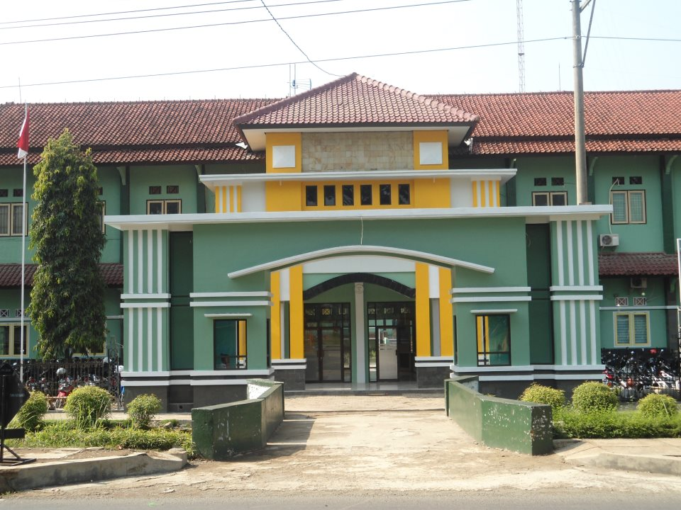
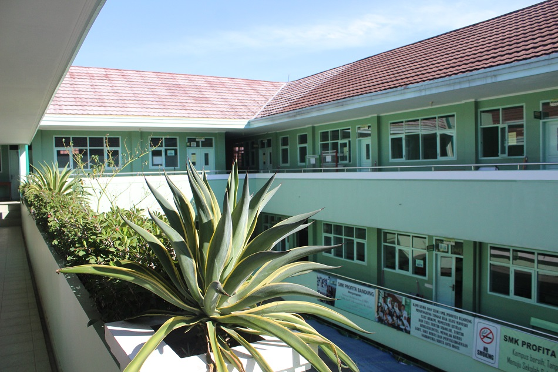

Turn Your Ambition into Achievement
Membentuk siswa-siswi SMK Turah 01 Bogor menjadi tenaga ahli profesional yang siap menghadapi tantangan dunia industri global.
99%
Tingkat Penempatan Kerja & Alumni Sukses

Jurusan Keahlian
Geser ke kanan untuk melihat program keahlian favoritmu
Ekstrakurikuler
Kembangkan bakat, kedisiplinan, dan minat non-akademikmu di sini

Japanese Indonesian Club (JIC)
Komunitas pecinta budaya Jepang dan Indonesia. Mempelajari bahasa, kebudayaan, seni, hingga pertukaran budaya.

Pramuka (Gugus Depan)
Membentuk karakter disiplin, kemandirian, kepemimpinan, dan keterampilan bertahan di alam terbuka.

Pasukan Pengibar Bendera (Paskibra)
Melatih ketahanan fisik, kedisiplinan tinggi, kekompakan baris-berbaris, dan rasa cinta tanah air.

Palang Merah Remaja (PMR)
Fokus pada pertolongan pertama, kesehatan remaja, jiwa kemanusiaan, dan bakti sosial masyarakat.

Seni Bela Diri Karate
Seni bela diri untuk melatih ketahanan mental, pertahanan diri, kebugaran fisik, dan prestasi olahraga.

Tahsin Al-Qur'an
Program perbaikan bacaan Al-Qur'an sesuai tajwid, hafalan surat-surat pendek, dan pembentukan akhlak mulia.
Profil Sekolah: Peluang Terbaik untuk Mengubah Mimpi.
Berdiri sejak 2015, SMK Turah 01 Bogor berkomitmen tinggi memberikan pendidikan kejuruan berkualitas tinggi dengan fasilitas lab modern dan kerja sama erat bersama industri.
30%
Praktik Industri Nyata
95%
Langsung Kerja / Kuliah

Akademik & Program Keunggulan
Pilih jurusan terbaik sesuai minat dan bakatmu untuk masa depan gemilang
Teknisi Komputer & Jaringan
Belajar perakitan komputer, manajemen server cloud, mikrotik, hingga keamanan jaringan profesional.
Rekayasa Perangkat Lunak
Menguasai pembuatan web, aplikasi mobile, hingga arsitektur database modern.
Desain Komunikasi Visual
Mempelajari komunikasi visual, multimedia, editing video, dan seni desain digital.
Dewan Guru & Staff
Dididik dan dibimbing oleh tenaga pengajar profesional dan berpengalaman di bidangnya
Drs. Budi Santoso, M.Pd
Kepala Sekolah & Pengampu Mata Pelajaran Manajemen Kepemimpinan.
Siti Aminah, S.Kom
Ketua Kompetensi Keahlian Teknisi Komputer dan Jaringan.
Ahmad Fauzi, S.T
Instruktur Utama Rekayasa Perangkat Lunak.
Berita & Pengumuman Terbaru
Informasi seputar kegiatan dan agenda penting sekolah
Penerimaan Siswa Baru (PPDB) 2026
Pendaftaran gelombang pertama resmi dibuka mulai bulan depan. Dapatkan potongan khusus!
Juara 1 LKS tingkat Nasional
Siswa TKJ SMK Turah 01 berhasil memenangkan kompetisi keahlian tingkat nasional.
Job Fair & Industrial Gathering
Kerja sama penempatan kerja sama dengan 20+ perusahaan multinasional.
Galeri Kampus & Kegiatan
Dokumentasi aktivitas belajar mengajar serta fasilitas penunjang sekolah
Praktik Laboratorium Komputer
Suasana praktikum jaringan dan pemrograman siswa-siswi di lab modern.
Studio DKV & Podcast
Fasilitas multimedia lengkap untuk kebutuhan produksi konten dan siaran.
Kegiatan Ekstrakurikuler
Berbagai aktivitas positif mulai dari Paskibra, PMR, hingga Rohis.